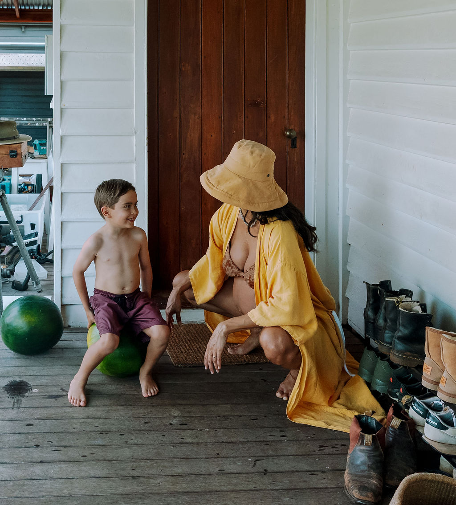

Birth Preparation
Virtual or In-Person
Calm, personalised preparation so you and your partner feel informed, grounded, and ready for birth.
Includes
- A personalised birth plan
- Labour comfort and breathing techniques
- Partner guidance and preparation
- Evidence-based guidance
- Emotional preparation and reassurance
- Byron Bay & Northern Rivers — $300
- Virtual consultations — $250